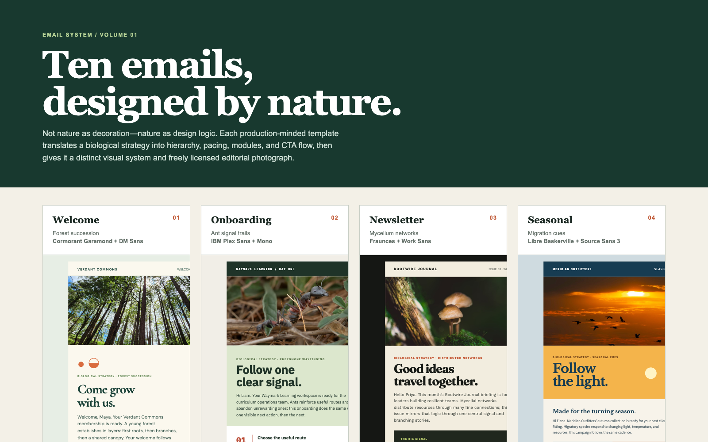
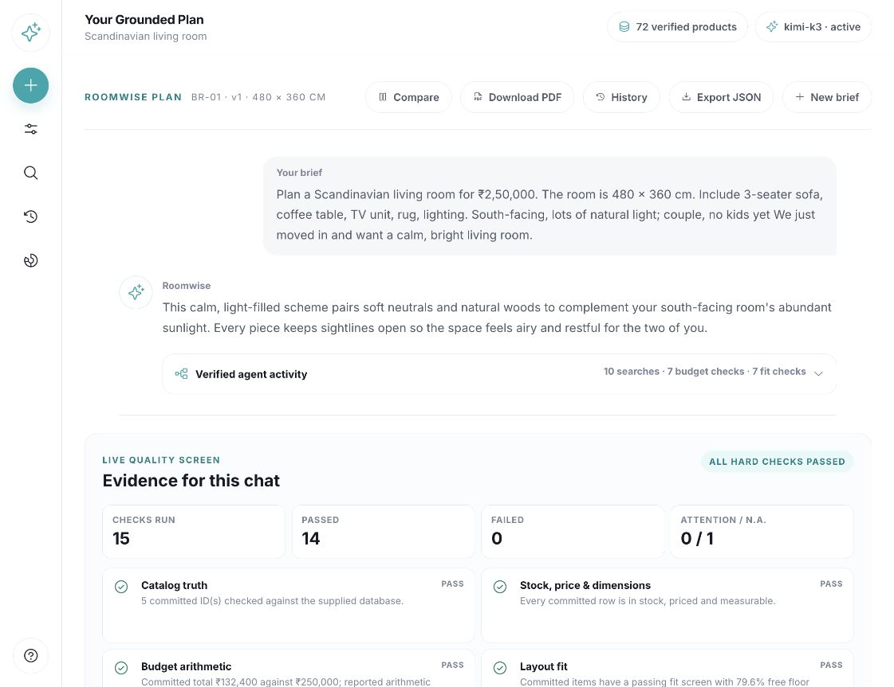
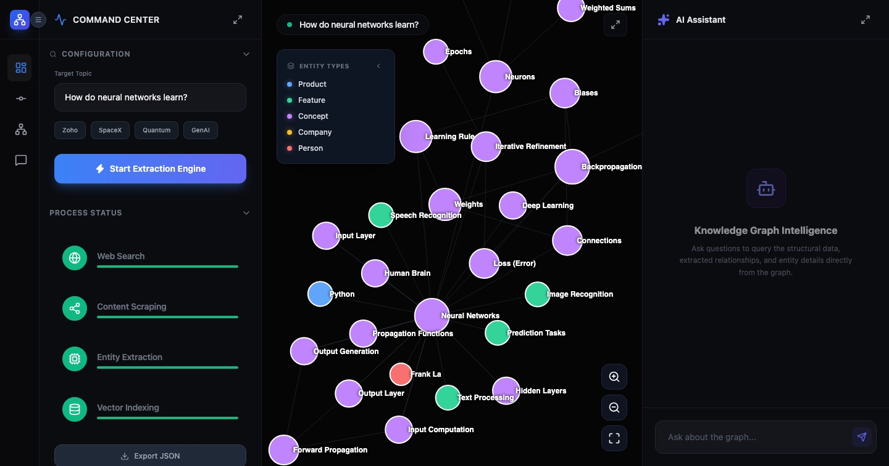
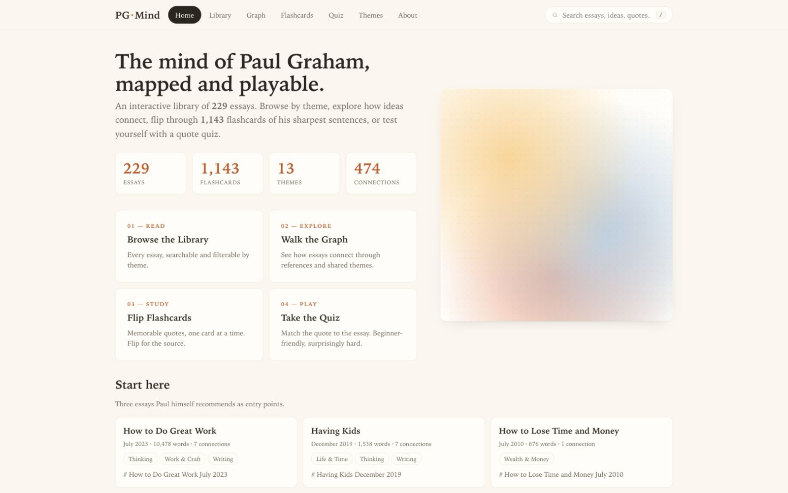
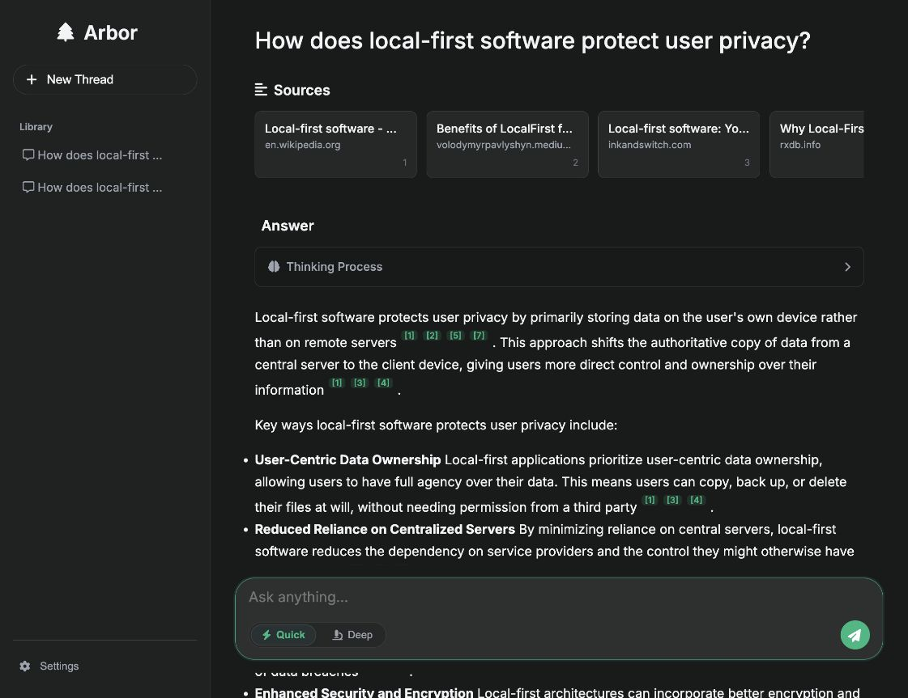
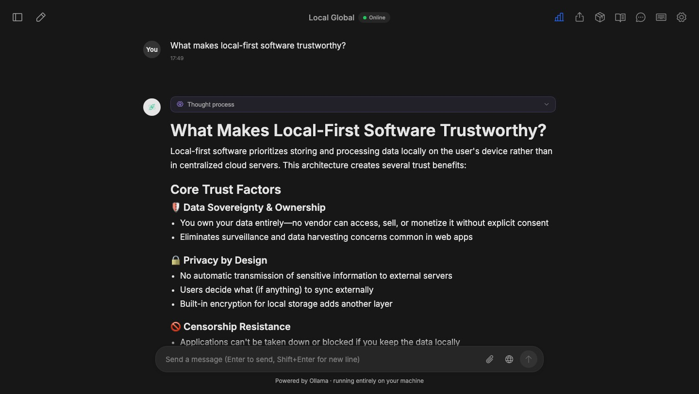
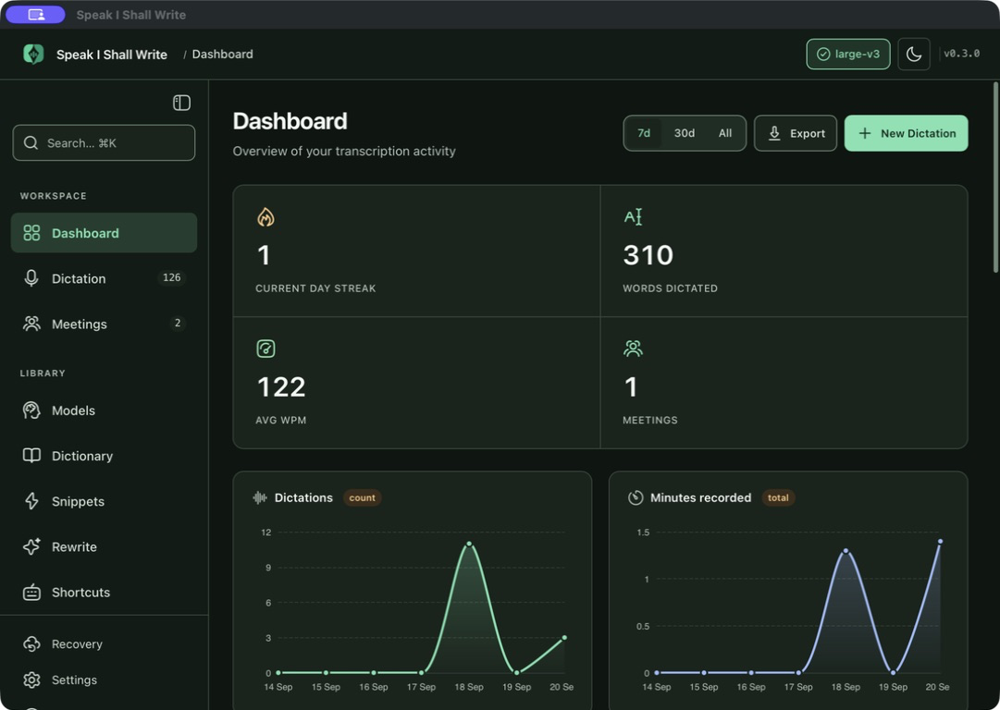

01 · Privacy-first web app
Pollivu
A zero-PII polling platform with anonymous voting, live results, AI-assisted poll creation, encrypted bring-your-own keys, QR sharing, embeds, and exports.
FlaskMulti-provider AIPrivacy
A studio for thoughtful software
Product-minded engineer working across strategy, systems, and interface craft. I build privacy-conscious mobile apps, AI workflows, data products, and the tools that make them dependable.
Selected product work
These projects combine product reasoning, technical execution, interaction design, and deliberate handling of real-world constraints.
01 · Privacy-first web app
A zero-PII polling platform with anonymous voting, live results, AI-assisted poll creation, encrypted bring-your-own keys, QR sharing, embeds, and exports.
Mobile product studio
Real Flutter screens rendered with representative data—not marketing mockups. Open any app to browse every published screen, including primary flows, alternate themes, and edge states.
Web, systems & interface craft
Working prototypes, editorial experiences, application concepts, and focused tools—each built to test a distinct product idea.

Email design system
Ten responsive, production-minded email templates translating forest succession, mycelium, migration, pollination, honeycomb, and other natural systems into campaign structures.

Educational experience
An interactive historical tribute combining editorial storytelling, a contextual AI conversation, multimedia, and visual knowledge exploration.

Actual applicationApplied AI · Private case study
A constraint-first interior planning assistant that grounds recommendations in verified catalog data, checks budget and room fit, explains trade-offs, and keeps safety boundaries explicit.
Restricted source and confidential catalog data are intentionally excluded.

Actual applicationAI knowledge system
A Gemini-powered workspace that turns a topic into an explorable graph, supports node-by-node expansion, preserves graph sessions, and answers contextual questions against the visible knowledge structure.

Actual applicationEditorial knowledge experience
An interactive study layer for 229 essays: searchable library, theme filters, focused reader, related-essay paths, a relationship map, flashcards, and lightweight recall quizzes.

Actual Flask appDeep research assistant
A Perplexity-inspired research product with quick and deep modes, streamed answers, hybrid retrieval, persistent threads, prominent sources, and inline citations that reconnect claims to evidence.

Actual macOS appNative macOS · Local AI
A fully local desktop assistant built around Ollama, document RAG, multilingual speech, web search when enabled, durable conversations, personas, and extensible MCP tools.

Actual macOS appNative macOS · Speech utility
A system-wide local dictation app with Whisper transcription, a global hotkey, auto-paste, meetings, model management, custom vocabulary, snippets, file transcription, and optional Ollama-powered rewriting.
Public project archive
About
I build products, not isolated features. My engineering background gives me the depth to reason about architecture and edge cases; my product work keeps that depth connected to human needs and commercial reality.
Software Debug Engineer
Business Fellow
Python LLM Trainer